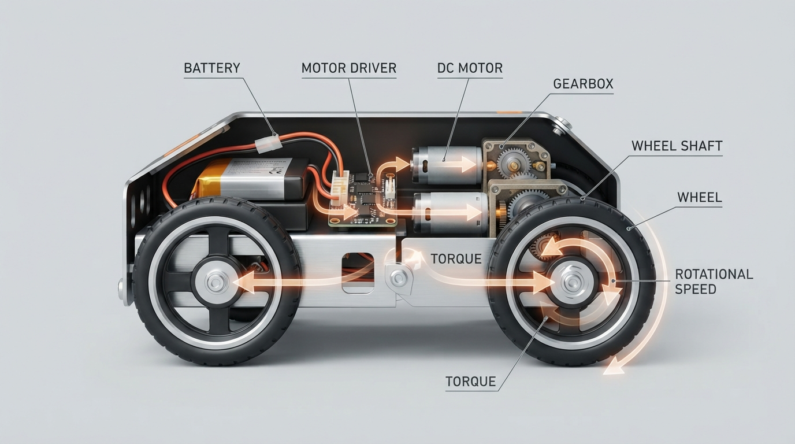

A motor command is not the same thing as a fixed robot speed.
In Class 7, students follow the complete chain from electrical energy to motion:
• how a DC motor converts electrical power into rotation;
• why torque and RPM describe different capabilities;
• how gearboxes trade speed for wheel torque;
• how wheel radius determines ideal pushing force and travel per revolution;
• why load, traction, voltage, and heating limit real performance.
The lesson combines worked calculations, a Python torque–speed model, prediction questions, a wheel-size design challenge, and a video-based RPM measurement activity. Students learn to treat equations as testable engineering predictions rather than guarantees.
Invite students to run the model, change the assumed motor parameters, and compare the predicted wheel speed with a real measurement from RoboRover.
Explore Professor OS: https://connect.vin/professor-os
#Robotics #STEM #Engineering #Python
In Class 7, students follow the complete chain from electrical energy to motion:
• how a DC motor converts electrical power into rotation;
• why torque and RPM describe different capabilities;
• how gearboxes trade speed for wheel torque;
• how wheel radius determines ideal pushing force and travel per revolution;
• why load, traction, voltage, and heating limit real performance.
The lesson combines worked calculations, a Python torque–speed model, prediction questions, a wheel-size design challenge, and a video-based RPM measurement activity. Students learn to treat equations as testable engineering predictions rather than guarantees.
Invite students to run the model, change the assumed motor parameters, and compare the predicted wheel speed with a real measurement from RoboRover.
Explore Professor OS: https://connect.vin/professor-os
#Robotics #STEM #Engineering #Python

Class 7: How Motors Turn Electrical Energy into Robot Motion
A practical robotics lesson on torque, RPM, gearing, wheel force, motor limits, and a Python torque–speed model, with experiments that connect equations to RoboRover.